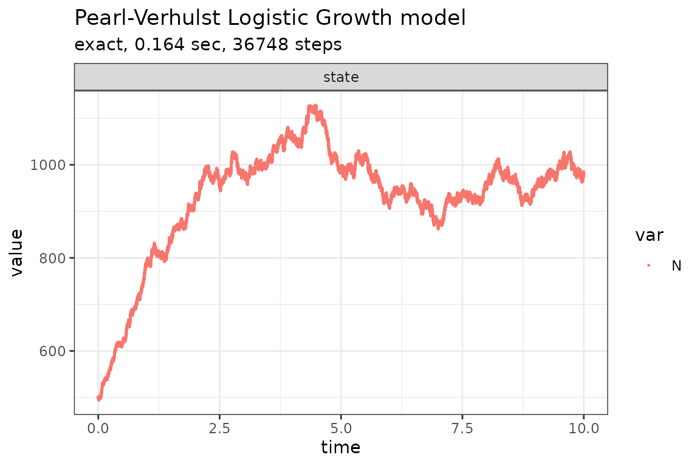
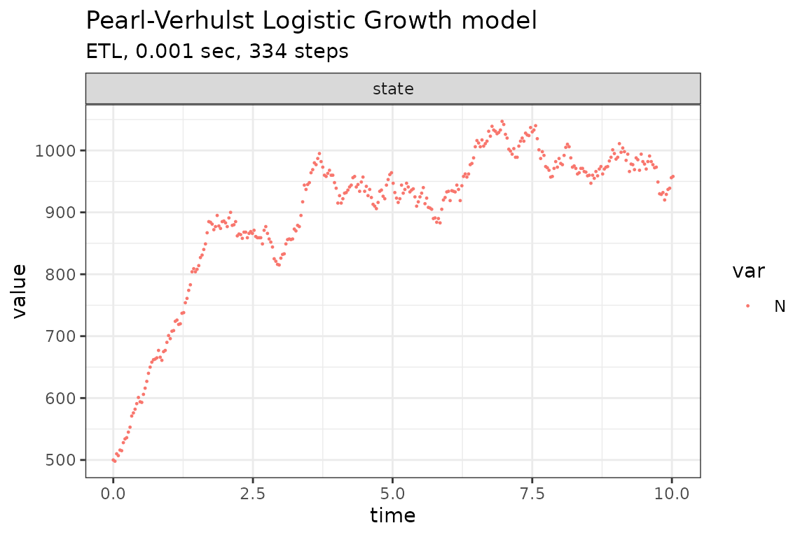
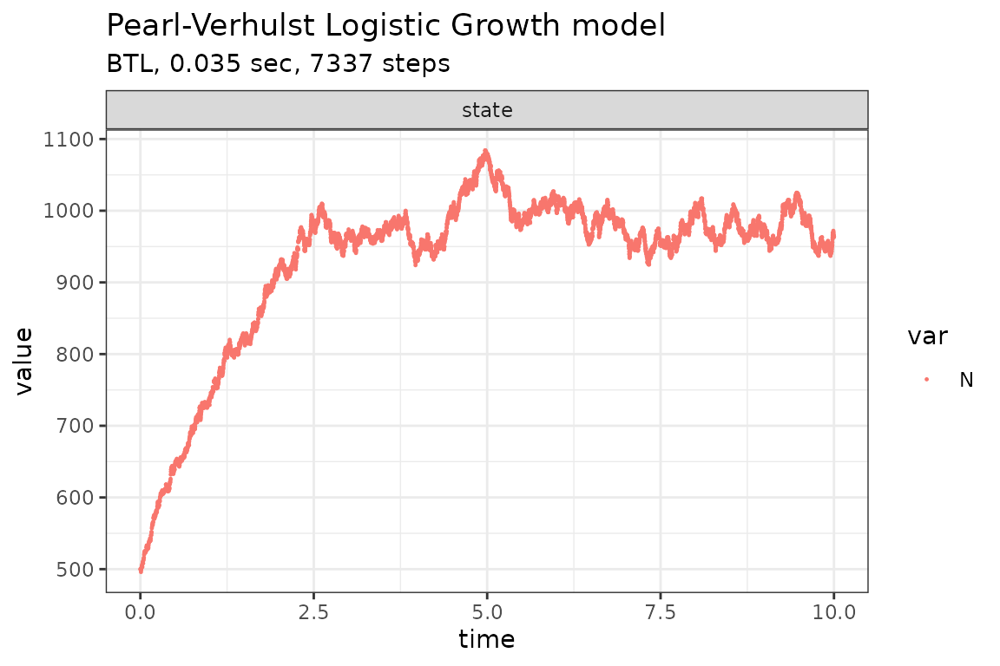

The classical logistic-growth model (Kot 2001) assumes that the growth of a population decreases with increasing population size and is given by the following equation,
\[ \frac{dN}{dt} = rN \times \left(1 - \frac{N}{K}\right) \] where \(N\) is the number (density) of indviduals at time \(t\), \(K\) is the carrying capacity of the population, \(r\) is the intrinsic growth rate of the population.
This model consists of two reactions, birth and death, whose propensity functions are defined as:
- \(a_1(x) = bN\)
- \(a_2(x) = (d + (b - d) \times N / K) \times N\)
where \(b\) is the per capita birth rate and \(d\) is the per capita death rate.
Assuming \(b=2\), \(d=1\), \(K=1000\) and \(X(0)=(500)\), we can define the following parameters:
library(GillespieSSA2)
sim_name <- "Pearl-Verhulst Logistic Growth model"
params <- c(b = 2, d = 1, K = 1000)
final_time <- 10
initial_state <- c(N = 500)The reactions (each consisting of a propensity function and a state change vector) can be defined as:
Run simulations with the Exact method
set.seed(1)
out <- ssa(
initial_state = initial_state,
reactions = reactions,
params = params,
final_time = final_time,
method = ssa_exact(),
sim_name = sim_name
)
plot_ssa(out)## Loading required namespace: ggplot2
Run simulations with the Explict tau-leap method
set.seed(1)
out <- ssa(
initial_state = initial_state,
reactions = reactions,
params = params,
final_time = final_time,
method = ssa_etl(tau = .03),
sim_name = sim_name
)
plot_ssa(out)
Run simulations with the Binomial tau-leap method
set.seed(1)
out <- ssa(
initial_state = initial_state,
reactions = reactions,
params = params,
final_time = final_time,
method = ssa_btl(mean_firings = 5),
sim_name = sim_name
)
plot_ssa(out)
Acknowledgements
Description was adapted from Pineda-Krch (2008).